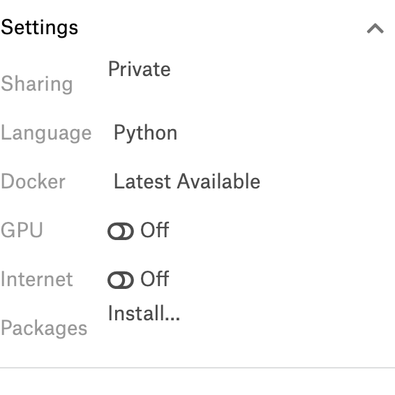

3.1.34. 5.1 kaggle介绍
3.1.34.1. 5.1.1 Kaggle
3.1.34.1.1. 平台简介
Kaggle是由联合创始人、首席执行官安东尼·高德布卢姆（Anthony Goldbloom）2010年在墨尔本创立的，主要为开发商和数据科学家提供举办机器学习竞赛、托管数据库、编写和分享代码的平台。该平台已经吸引了80万名数据科学家的关注，这些用户资源或许正是吸引谷歌的主要因素。
本段摘自百度百科
通俗的说，Kaggle上面有着各种高质量的数据集，并且基于这些数据集会有一些大的公司进行赞助，来举办一些算法的竞赛，在竞赛时还可通过社区进行讨论（包括比赛中的分享、答疑，和比赛后的top solution分享）。这样就使得全球的顶尖高手会对参加比赛产生兴趣，因为收获到的不仅有奖金还有名气。同时kaggle对萌新也很友好，在社区中可以学到很多的知识和解决方案（top solution）。
3.1.34.1.2. 比赛介绍
kaggle 网站是纯英文的，我们可以把比赛分为2类:
竞赛competitions：竞赛的目的很简单，就是要求在指定时间内（一般是2-3个月）使用出题方的数据完成指定的任务，如果有幸赢得比赛，不但可以获得奖金，模型也可能会被竞赛赞助商应用到商业实践中、获奖者直接进入赞助企业工作或者获得一些重大会议邀请、发表论文等
数据集datasets：数据集是赞助商为了解决某些问题，免费公开了自己的内部的一些脱敏的数据，所有人都可以使用这些数据集进行研究，来改进现有的模型或者优化现有问题的解决方案，但是这些模型或解决方案可以不公开，所以这部分是不提供奖金的，只是能够与别人的方案做对比。
3.1.34.2. 5.1.2 Kaggle板块介绍
3.1.34.2.1. Data
这个不用多介绍，就是我们所使用的数据。
这个模块需要认值阅读，它介绍数据的产生方式、存储形式、每个字段的含义等。如果数据规模很大，你没有内存足够大的服务器可以hold住，可能就没法打这个比赛或者使用这个数据集；我们还要注意他的数据类型什么，比如图像数据那就得用深度神经网络，如果对这方面不熟或者没有GPU可用，肯定是没有办法参加这个比赛，不要妄想使用CPU来做CNN计算，至少目前来说是不可能的。 我们可将 kaggle 平台上的比赛分成一下4类：
挖掘：面对的是结构化数据，也就是表格数据，包括了各式各样的预测问题(预测销量、点击率、推荐排序等)，主要的共性就是理解数据，理解问题，从数据中找到有用的信息用来预测，这类问题胜负更多的是在特征上，所以这部分是树形模型的天下比如有名的xgboost。
图像：图像的话那肯定需要CNN了，这部分虽然可以用迁移学习来做，但是要想获得排名大量的算力也是必须的，因为要验证微调的次数也会很多。
语音：这部分不太了解，就不献丑了
NLP ：BERT出来以后各种预训练的权重会对这方面的比赛帮助很大
3.1.34.2.2. Rules
比赛规则。这个必须要看，无论是萌新还是大神，比赛的规则还是要遵守的。
提交次数：这里会写明每天允许的最大提交次数，一般是 5次，假如一个比赛持续时间是三个月，那么总提交次数差不多就是 5×90=450 次。
很多人为了躲过提交次数的限制或者“节省提交次数”，专门注册了小号，这被称为 multiple accounts，是会被 kaggle 的反作弊系统侦察出来的。在比赛结束后，会先公布初步排名，然后 kaggle 平台反作弊系统开始运行，大约两三天后，凡是被判为作弊的队伍直接从排名中移除，几个月的努力就打水漂了！所以这个操作一定要禁止。
另一个是组外私自分享代码和结果，这也是明令禁止的。组队之后队员之间可以分享，或者通过公开的 kernel或discussion区分享。同样，如果被检测出不同队伍或个人间有相似的结果，也会被移除最终榜单。
3.1.34.2.3. Team
在参加比赛的时候可以向别人发起组队邀请，或者接受别人的邀请，三个臭皮匠顶个诸葛亮，组队的好处就不用说了，每个队伍最多4个人，并且是可以共享代码的，这样相当于算力提高了4倍。
另外就是一定要给队伍起个骚气的名字。
3.1.34.2.4. Kernels
。。。(不知道怎么翻译，总之就是核心代码)。支持 Python 语言的脚本 .py 和 .ipynb，和 R 语言的脚本 .R 和 .ipynb。
分 public kernel 和 private kernel。
public kernel是公开的，大家都可以看到，从这里可以学到非常多的东西，当然你自己也可以通过公开自己的 kernel 分享解决方案或观点。
private kernel是你自己的，别人看不见，你可以分享给组内成员。
为方便大家打比赛，kaggle 提供了一些运算资源。kaggle 用户的每个 kernel 可以有 16G 的内存和 4 核CPU，这足够打多数比赛了。另外，提供了 GPU，在新建 kernel 的时候可以选择开启 GPU，但当打开 GPU 时，CPU 和内存资源会少一些，这个后面的薅羊毛指南中会详细介绍。
3.1.34.2.5. Discussion
讨论区，这个区大家会分享观点、讨论问题、甚至寻找组队队友。
kaggle 的分享氛围非常好，对萌新也非常友好。在整个比赛进程中大家不断地分享自己的新发现，很多有用的信息都是在这里获取的。 对于一个新手而言，每天做好 kernel 区和 discussion区的跟踪，有充足的时间尝试他们的想法，应该可以获得一个不错的排名。 比赛结束后，一些大牛甚至会将自己获胜用到的方法、小技巧（tricks）全部分享出来。
3.1.34.2.6. Leaderboard
排名区，分 public LB 和 private LB。比赛方会将 test 数据集中一部分(比如 30%)拿出来做为 public LB 评分和排名，剩下的部分作为 private LB（也就是最终结果）的评分和排名。
你每天都可以提交并查看自己的答案在 public LB 的得分和排名情况，在比赛结束前需要选择两个提交作为自己的最终答案，比赛结束后，平台会计算你的答案的 private LB 得分并自动挑选得分高的一个作为你的最终成绩。
在讨论区你会经常听到大家讨论 CV score、LB score，指的就是你模型本地交叉验证的得分和提交后的 public LB 得分。
shake up：public LB 得分可能会和 private LB 得分差别很大，比赛结果公布前你可能排名前十，比赛结果公布后发现自己跌到上千名了，这就是所谓的 shake up，一般是模型过拟合了，这个需要在训练的时候就要注意。
3.1.34.3. 5.1.3 Kaggle竞赛的排名机制
一般情况下，都是以准确率为导向的排名，毕竟我们的模型计算的准确是第一标准。
针对于比赛而言，在比赛结束之前，参赛者每天最多可以提交5次测试集的预测结果。每一次提交结果都会获得最新的临时排名成绩，直至比赛结束获得最终排名，Kaggle将参赛者每次提交的结果取出25%-33%，并依照准确率进行临时排名。在比赛结束时，参赛者可以指定几个已经提交的结果，Kaggle从中去除之前用于临时排名的部分，用剩余数据的准确率综合得到最终排名。
所以，比赛过程中用于最终排名的那部分数据，参赛者是始终得不到关于准确率的反馈的。这样一定程度避免参赛模型的过拟合，保证评选出兼顾准确率和泛化能力的模型。
3.1.34.4. 5.1.4 Kaggle薅羊毛指南
~~Kaggle提供免费访问内核中的NVidia K80 GPU。我的个人理解相当于1060或者1070的水平吧。~~ 我们可以在Kernel的界面右侧底端，Setting选项中将GPU开启，这样就可以使用免费的GPU资源了

~~Kaggle只提供6小时的连续GPU使用时间~~，虽然对于大数据量计算来说根本就不够用，但是对于研究，这些已经够了，例如我们在图像识别中经常用到的CIFAR-10 图片分类，一般训练2个小时左右就能够得到比较准确的模型了，这对于入门学习来说已经沟通了。
更新：现在Kaggle提供的GPU为 P100,限制为，每周免费使用30小时,还可以连接google的colab，这样对于我们学习和测试，绝对是足够了。
3.1.34.5. 5.1.5 其他的一些数据竞赛平台
除了Kaggle，其实还有不少类似的平台；